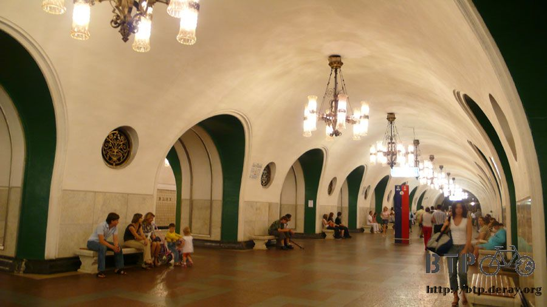
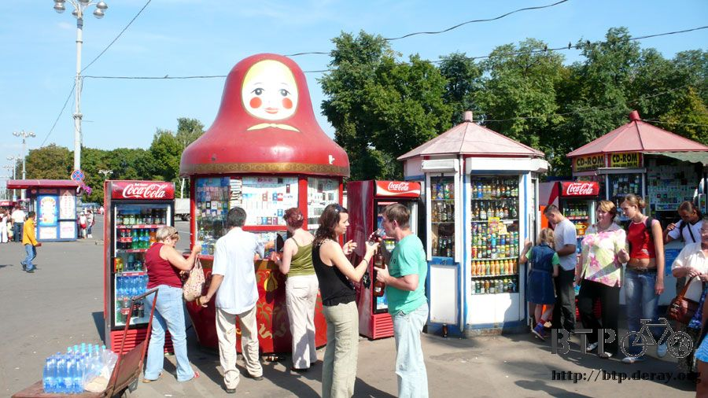
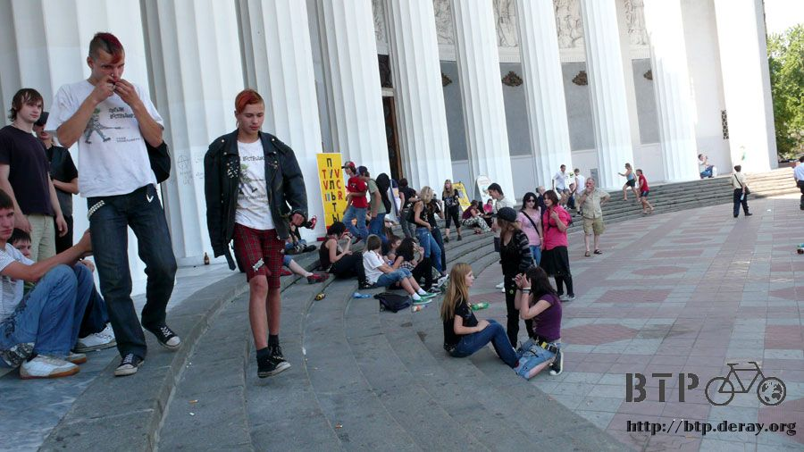
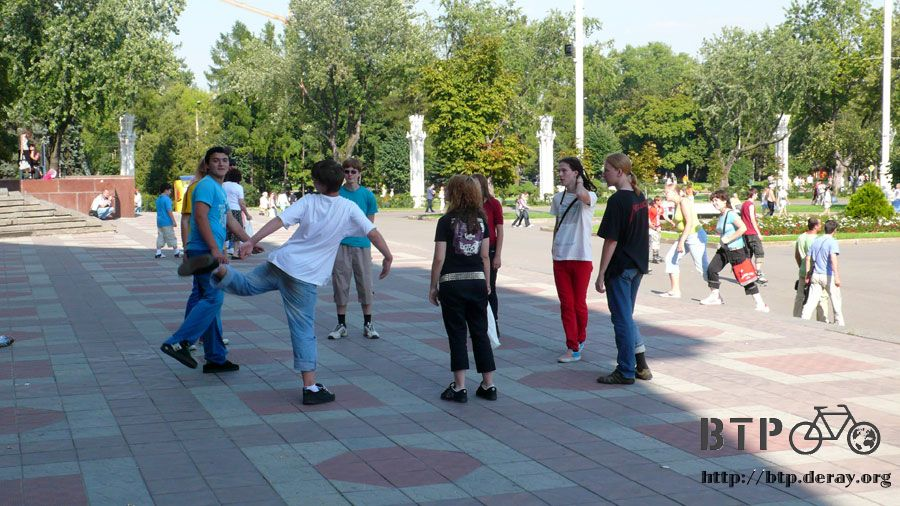
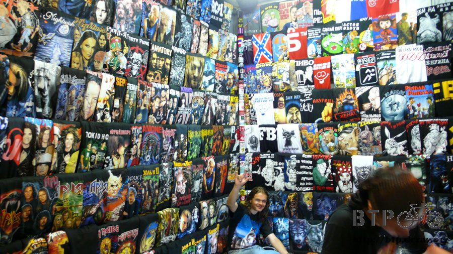
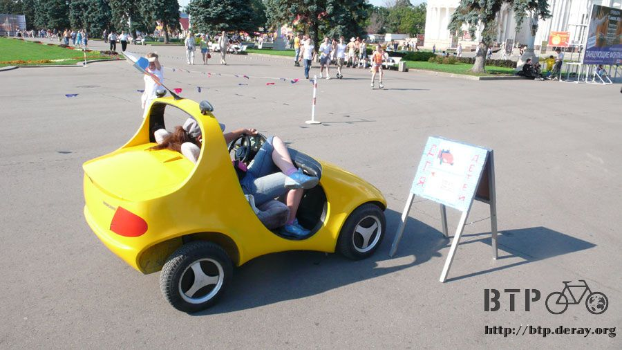
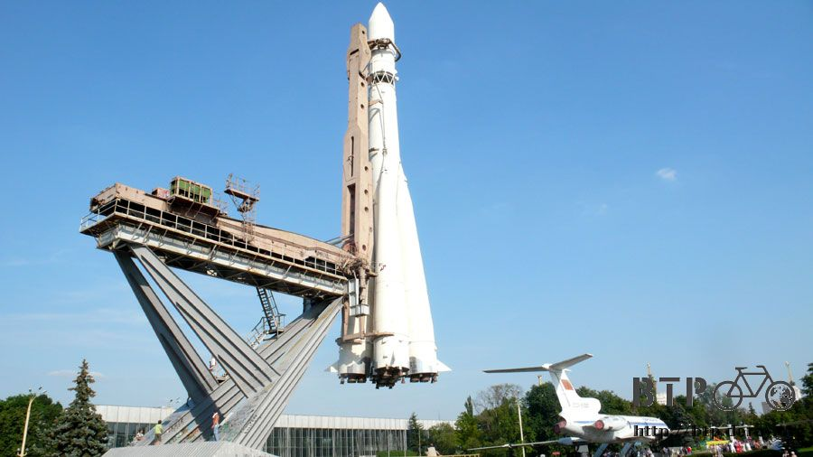

玩夠啦～該收心了
第二次因為寫遊記而徹夜未眠，睡前還有十一日下半天的遊記還沒整理，一百多張的照片需要加上說明的文字。
積欠著事情沒做完睡得就很不安穩，這也是為什麼會熬夜的原因，因為想說等寫完再睡，拖到明天的話那更累人，結果寫了一整晚還是寫不完。
睡醒之後自己料理食物來吃，前天買的糧食吃兩天真的剛剛好，整理遊記到下午三點的時候，發現再這麼下去，整天都窩在房間裡，那今天的遊記就不用寫了。
出門的時候覺得好像忘了什麼東西，走到地鐵站的時候想起來是忘記帶手錶，這個無傷大雅，就沒掉頭回去拿。
搭著地鐵往今天要去的目的地移動，打算去看太空紀念碑，一座金屬打造超級高的建築，順便去看一下電視塔。
這是計劃啦，跟昨天計畫去參觀博物館結果不想排隊買票一個也沒參觀到一樣，今天所做的事情跟計畫也是完全沒關係。
這次搭地鐵不需要轉車，一路搭著橘線經過九個車站，看到幾乎所有的旅客都下車的那一站，就是目的地VDNKH站。
搭地鐵的心得已經有兩大篇可以看，今天的搭車過程就全部省略，直接抵達車站。

這一站的壁面沒有浮雕，圓型的小孔上面鑲有銅製的花紋裝飾，這是空調的出風口，旁邊的貼紙是公車轉乘資訊。
頭上的吊燈也很漂亮，使用上下對稱的琉璃燈罩，白色偏黃的燈光看起來很舒適，吊燈的雕花和空調出風口是同一系列的。
這就是車站的外觀，這一站那麼多人下車讓我有點訝異，這麼多人想看太空紀念碑？
先站在定點左右張望尋找地標的蹤影，一轉過身赫然發現就是太空紀念碑呀！
整個也太容易被發現了吧，就在這車站的旁邊而已，而後面那一根細細尖尖的柱子是電視塔，這兩個地方就是今天要參觀的主題，結果兩個都沒去。=..=
實在很好奇為什麼大家都在這一站下車，但是卻對太空紀念碑不多看一眼，也沒有人往它的方向走，出站之後的人潮不約而同的向左轉。
好奇心吸引之下就跟著走過去，看看究竟有什麼地方如此吸引人。
比較大一點的站都像上面那張照片一樣，是圓型的建築，而車站的周邊會聚集各式各樣的攤販，從賣吃的到賣玩的一應俱全。
這位老兄是賣風箏的，他可以在兩公尺的高度就放起風箏，而且飛得很好，風箏在他手裡好像有了生命一般。
從哈薩克就看到這個KBAC，現在知道他賣的是發酵的小麥汁，喝起來有點像啤酒，俄羅斯人超喜歡喝這種東西，街邊小販跟商店都有在賣。
賣玩具的店家，各種布偶都會一扭一扭的走動～這些玩具吸引了大人們的圍觀，所以不能說它是騙小孩的玩意。
這種黃色的廂型車很路上很常看到，它也是公車的一種，招手即停，因為沒搭過所以不知道票價和搭起來的感覺如何。

公車站旁邊貼滿了小廣告，俄羅斯的電話號碼超短，只有六位或是七位數，廣告底下都附有電話的便箋，好奇它的內容都在寫些什麼？
沿著圍牆是賣衣服的媽媽們，腳邊放一個大袋子，將衣服掛在手上賣，只有這一攤是掛在圍牆上面，接著往下走全部都老實的拿在手上。
這種銷售方式在烏魯木齊的巴扎也看過，雙手就是衣架，莫斯科的貧富差距很大，這些都是屬於比較窮苦過日子的人家。
將衣服掛在手上就變成服飾店，那寵物店該怎麼辦呢？
像這樣提著籃子出來，將貓咪或是小狗抱在懷裡，這可不是合照賺錢喔，這樣子就是寵物店了，做生意的方式真令人嘆為觀止。
要嘛就是小窗戶型的封閉商店，要嘛就是這種純人力的個人店鋪。
順著人潮走會穿過這一條熱鬧的街道，走在這種有點擠的街道要注意隨身的行李，熱鬧的地方總是扒手會出沒的地點。
難得有摩肩擦踵的感覺，店家賣的東西也是之前沒看到的。
比如說這個影片專賣店
街道的出口會看到莫斯科娃娃造型的香菸攤，從車站一路走到這邊來，究竟大家要去什麼地方呢？

謎題揭曉
『全俄展覽中心』，之前只有聽過這個地方，想來但是不知道位於地圖的哪裡，結果就在太空紀念碑附近，誤打誤撞的到了這邊。
拍下這張照片的時候，我才想起來今天真正忘記帶出門的不是手錶，而是新買的記憶卡，手上這一張512MB的要省著拍才行。
再怎麼省還是沒兩下子就拍完，一直不斷的刪除照片才能拍新的，這樣的好處就是今天的遊記不會又是一兩百張照片的規模。
正門口的上方有兩個人高舉著麥穗，社會主義的典型象徵。
這裡的名稱是展覽中心，那進去應該需要門票吧？
入口也是用很多欄杆圍起來，只留一個小門開放進出，四周看不到售票處，跟著人群往裡面走，我也想試試看伸手說嗨～就可以免門票這一招。
走著走著就進到裡面，搞了半天是不需要門票的地方，實在太棒了！
一進到裡面就是超寬廣的空間，又是一個行人天堂，步行、直排輪、自行車可以隨意的在這邊活動，就算不進去任何地方參觀也無所謂。
先從眼前所看到的建築物直直走過去，那麼大一棟，頂端又掛著星星，猜想這棟就是整個展區最有看頭的建築物。
告示牌一口氣就列出了十二大棟的建築物，每一棟看起來都很壯闊雄偉，每個都去看的話，這得參觀到什麼時候呀？

還沒到俄羅斯之前我對這個國家完全不熟悉，就只有一些刻板印象，這邊是鐵幕國家，人民生活在水深火熱之中。
實際到了之後才發現課本講的都是唬爛的，這邊的規定不多，所有人都依照自己的想法在行動，但是卻不會影響到其他人。
在其他地方一定會掛上禁止踐踏草皮、水池內禁止戲水，一堆禁止來禁止去的標語，在莫斯科就很少看見。
這邊的生活實在彈性而且隨興得很有趣，所以炎熱的天大家就很自然的泡在水池裡玩水，樹蔭下綠意盎然的草皮拿來野餐再適合不過。
仔細想一想，為什麼不可以在水池裡面玩水？
草皮上有一些奇怪的裝飾，咖啡色的雪人和企鵝孵蛋。
花圃也具有設計感
很冷的拍照玩偶又出現了，這次還多了一個海棉寶寶，忍者龜少了一隻，可能就是阿爾巴特街那一隻。
一邊走一邊看這些有趣的東西，很快就走到正門了，列寧真是無所不在呀。
在塑像和建築物之間的空地擺了很多的小尖錐，讓玩直排輪的人可以用各種方式穿越。
不是只有簡單的繞S型通過而已，一些直排輪的高手可以在小尖錐中快速旋轉外加倒著滑，技術實在很高超。
小朋友你繼續多練幾年，總有一天你也可以溜得很炫。
主體建築物上方的雕塑
在門口聚集很多年輕人，看起來都是叛逆的感覺，喝酒喝到掛掉的就躺在門廊下睡覺，請不要用壞孩子形容他們，這不過是一種生活方式。

大門的前面有青少年圍成一個圈圈在踢沙包，規則是沙包不能落地、手也不能去碰到，違反的人就會被輪流踢屁股。

這麼大的一棟建築物裡面究竟是什麼呢？進去參觀居然也不需要門票喔。往內一看發現燈光很暗，不像博物館。
這麼大的一棟建築物，裡面居然只是普通的賣場而已，幾百個攤販和店家聚集在裡面做生意，外表的雄偉和內部的樣貌真難連結在一起。
既然進來了那就到處逛一下，這間店賣很多的龐克風格衣服、頭巾和配件。

店員很可愛，比著手勢讓我拍照，這些衣服花色都很有趣，在這裡買了一條新的頭巾，黑色底配上綠色小葉子。
裡面的店家實在太多了，什麼東西都有賣，居然連電動玩具店都有。
莫斯科的電動玩具店實在太有特色了，小窗戶經營的模式就不多說，光是它賣的東西就跨越了二十個年頭。
可以看到最新的PS3和Xbox360，這些沒什麼好稀奇，但是連古早時代的Mega Driver都能買到就很厲害，裡面不知道有多少的骨董可以尋寶。
賣CD的店，架子上混著放了各種的商品，電影、遊戲、音樂全部都不分類的放著，可惜都是俄文。
從側門離開商圈，一走出來馬上又變成巨大的白色建築物，門口還有一隻史瑞克在站崗，這裡面跟外面的印象實在落差很大。

地圖說這一棟並不是全俄展覽中心最大的建築，而這邊也才只是整個展區的入口處而已，還以為已經逛完了全部的東西，但還看不到百分之一。
繼續往展區內走，噴水池中一堆金光閃閃的人像，未免也太氣派了吧，有必要搞得這麼華麗嗎？
繞著水池走，這些塑像的動作都是不一樣的，中間一樣是一大堆的小麥，轉一圈之後背景變成剛才那一棟商場。
溜直排輪的人很多，厲害的人常看到，初學者也不少，有這麼大的場地可以練習，所以到處都能看到學著溜直排輪的有趣畫面。
走到金色塑像這裡，隨便往哪個方向看都是龐大的建築物，後面這一棟編號是N2，像這樣的建築在展區內非常的多，不足為奇，
白色遮陽傘的露天咖啡廳，這裡也有騎小馬的攤販，但不能自己騎，又恢復成坐在馬上被牽著走一圈那種模式，想痛快的騎馬請到賽里木湖。
除了騎馬之外也有別的選擇，可以搭她的車子，看起來是小了一點，但應該很舒適，搭車繞一圈廣場要價一百盧布。

隨處可見的龐大建築物系列，後面又是華麗的白色建築，路上行人看起來都快被曬昏了，沿路上也看到很多中暑的人。
在失去意識之前叫了最後一聲同伴的名字，然後就躺在草地上昏迷不醒，大家就拼命去找水、搧風。
再往前多走一段距離，就看到花海地毯，剛才的金色人塑像已經變成小小的了。
騎馬跟搭小車之外的選擇，騎駱駝。
這種等級的建築在國內已經可以當成是貿易中心了，外觀看起來真的棒，裡面呢？
一進去我整個人又傻眼了，這次整棟全部都是藥局，裡面都是穿著白袍的員工，濃濃的藥水味撲鼻而來。
全俄貿易中心，真的是在裡面做生意呀～不是只有好看而已
另一棟富麗堂皇的建築，慢慢開始習慣外觀看起來很豪華，一走進去卻是鐵皮屋商場的全俄貿易中心。
這邊停了一架大飛機，可以進去參觀，背後是太空梭的紀念碑，和一棟大建築物。

我想說這裡總該是展場了吧？
俄羅斯的太空科技可以很驚人的，第一顆人造衛星、第一位太空人都是俄羅斯的創舉，美國完全被壓著打。
之後美國突然宣布登陸月球，用來打擊俄羅斯的科技領先並凸顯美國的太空優勢。
直到今天這件事情仍然被質疑是騙局，因為美國在當時根本就沒有登陸月球的能力，真相永遠也不會被公開，所以就不用太追究了。
旁邊有一座比較小的飛機，就這麼停在路邊而已，這是真的飛機不是模型，加滿油的話說不定還能飛呢。
近一點看這座太空梭的模型，因為沒有規定不能攀爬，所以俄羅斯人就想說為什麼不能爬？

大人跟小孩會比賽誰爬得比較高，是真的可以隨意爬上爬下跑跑跳跳，不會有人過來說你們怎麼可以對展覽品不敬。
外面放著飛機跟太空梭，這棟建築物跟其他的相比也是毫不遜色，進去之前我祈禱它會展覽太空相關的物品。
就算是商場好了，拜託也多一點科技相關的東西，起碼裡面規劃成電腦街感覺還蠻搭的。
進去一看差點昏倒，這邊是花市 orz
實在太有創意了，外觀跟內裝絲毫沒有關聯性呀～
裡面看起來還蠻漂亮的，但是從外面看屋頂已經長滿鐵鏽，這棟建築年代蠻久遠了吧。
花市的後側，有一個圓型的大屋頂，走到這邊就幾乎沒有遊客了，展區類型到這一棟算是告個段落。
再接著往下走會到完全不同風格的區域，有湖泊、小船、啤酒、烤肉和蘋果樹。
小湖可以划船，水質蠻乾淨的，水面上有一根麥穗裝飾。
湖邊都是餐廳店家，主營烤肉。
像這樣超大塊的肉跟魚，直接串起來烤。蔬果也很驚人，整顆的青椒、洋蔥、茄子不用切就串起來，香腸也是一口氣串了三根。
跟之前吃的都不一樣，這邊是巨無霸份量的烤肉，俄羅斯吃肉類料理都是用秤重來計算價格，在這邊吃一串烤肉不知道要多少錢？
小湖被一條路切成兩半，另外一邊的水質比較不清，長滿了一堆浮萍，有些店家的座位很好，就在綠意盎然的湖面上用餐。
麵包屑往湖裡丟，野鴨就會聚集過來吃。
另一邊是划船居多，這一邊則是釣魚的人很多，這個老伯的袋子裡面全是活跳跳的魚，非常會釣。
走到這邊的時候我已經好累了，又熱又渴，這裡是全俄展覽中心的最北處，從南到北就走了好長一段路，折返的時候選擇不同的路走，可以看點別的景色。
展區內商店很多，一台又一台的冰箱販賣的飲料，還沒進入展區的時候外面一瓶小可樂賣三十盧布，我還覺得貴，根本就是在坑人。
同樣的飲料在展區內每一家都是賣四十盧布，外面是坑人，裡面是搶人，雖然很渴，但是口袋裡的錢怎麼也花不下去。
沿著這條路走的時候路旁有看到蘋果樹，同樣是長滿蘋果，想摘一些來吃順便止渴。
我想到的別人都已經先做了，低矮處的都已經被摘光了，地上也沒有掉蘋果。高處的都還是沒成熟的青蘋果，
漆成綠色的小屋，座落在這邊已經夠偏僻了，沒必要再搞神秘吧。
湖區的媽媽抱著小孩拍照，湖的對岸有看起來像別墅的房子。
跟前面都是豪華巨大建築很不一樣，這裡都是奇怪的小屋。
繞了一圈終於走回到熱鬧的展區，已經有那麼多華麗的建築物，但還是繼續再蓋新的，這棟蓋完裡面要賣什麼呢？
腳痠得快要斷掉了，坐在花圃邊休息一下，要是可以搭小火車看遍全部的大建築也不錯，裡面有沒有進去倒是無所謂。
終於走完整個展場，雖然走這麼多路，但是看到的只是不到十分之一的建築，這裡實在大得很誇張。
走得很累，想回去休息了～今天還要早點睡覺，除了遊玩跟寫遊記之外有更重要的事情要做。
一踏出全俄展覽中心看見這個畫面。
右邊那座尖尖的太空紀念碑無言的對著我說，你今天不是說要來看我的嗎？怎麼一出地鐵站跟著人潮就走到別的地方去了。
我真的完全把要看紀念碑以及參觀電視塔的事情忘光光，還好你們兩個長得夠醒目，雖然沒有特地去參觀，但起碼有看到你們長什麼模樣。
依原路走回地鐵站，一樣是來這邊玩的小孩整個累到不支，完全睡到翻過去，看得我很羨慕，爸爸倒是很頭大。
地鐵站的旁邊有四位穿著軍裝的人現場表演，因為唱得很棒，所以大家都會到前面的木箱子投錢。
搭乘橘線地鐵一路往回坐，差點睡著在地鐵站裡，要下車的那一站很小，只有兩個人下車，回到宿舍的時候第一件事情就是大口的喝水止渴。
在莫斯科待了六天的時間，感覺一下子就過去了，還有很多地方值得好好參觀，不長住在這裡是沒辦法玩遍莫斯科的。
這裡一年當中有六個月是冬天，我也很想看寒冬中的莫斯科會是什麼景色。
第二次在莫斯科的補給和休息已經非常足夠，明天星期一要離開莫斯科繼續往巴黎邁進，利用剩下十天的時間騎完俄羅斯並且穿越白俄羅斯。
剩下三分之一的路程，是當初規劃行程中認為最簡單的一段，沒有中國戈壁灘的酷熱、中亞國家的荒涼，治安也越來越好。
從北京往巴黎騎有倒吃甘蔗的感覺，最麻煩大概就是物價的問題，當使用的貨幣變成歐元的時候，花費開銷又要上漲一倍。
接下來可能要不住旅館，連餐廳都不能常吃，該是準備開伙的時候了。
繼續閱讀：8.13 最初之姿
俄羅斯-盧布－ 1：1.3 台幣
8.12 |
總計：35元 |
給乞丐婆婆5元、兩個冰淇淋30元 |
|